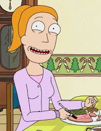

Hesabım

Rick, dâhi ama alkolik bir bilim insanı olarak evrenler arası kaosu umursamaz bir nihilizmle kucaklayan, zeki ama kusurlu bir karakterdir.
Morty, saf ama iyi niyetli, genellikle Rick’in çılgın maceralarına sürüklenen, korkak ama zamanla cesaret kazanan bir gençtir.

Summer, Morty’nin ablası olarak kendini kanıtlamaya çalışan, zeki, cesur ve zaman zaman bencil ama ailesine bağlı bir gençtir.
President Curtis, kendini beğenmiş, karizmatik ve politik entrikalara alışkın, Rick'e karşı hem hayranlık duyan hem de onunla rekabet eden ABD Başkanıdır.
Beth, Rick’in kızı ve Morty’nin annesi olarak, güçlü ama içsel olarak kırılgan, babasının onayını arayan, zeki ve zaman zaman sert bir veteriner cerrahıdır.
Jerry, Beth’in kocası ve Morty’nin babası olarak, güvensiz, saf ve genellikle beceriksiz ama iyi niyetli bir karakterdir. Çoğu zaman Rick’in alaylarının hedefi olur.